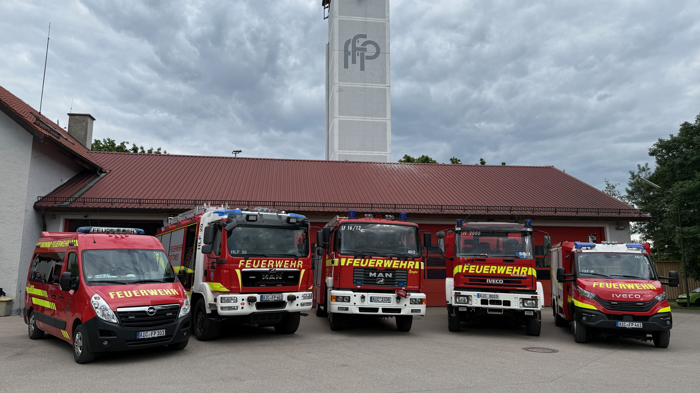
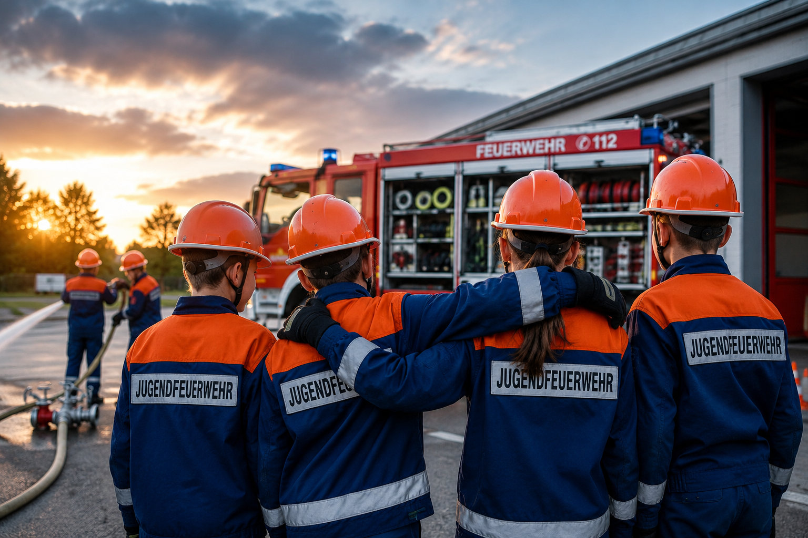
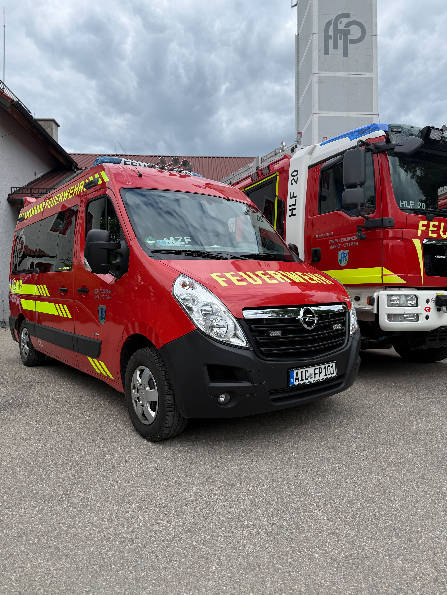
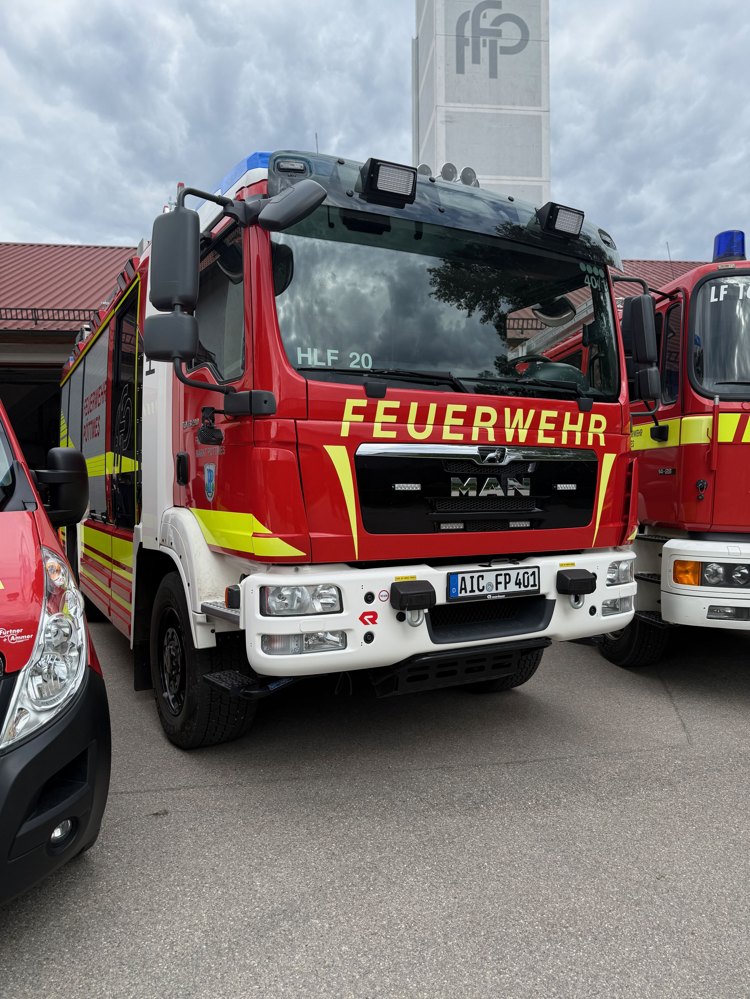
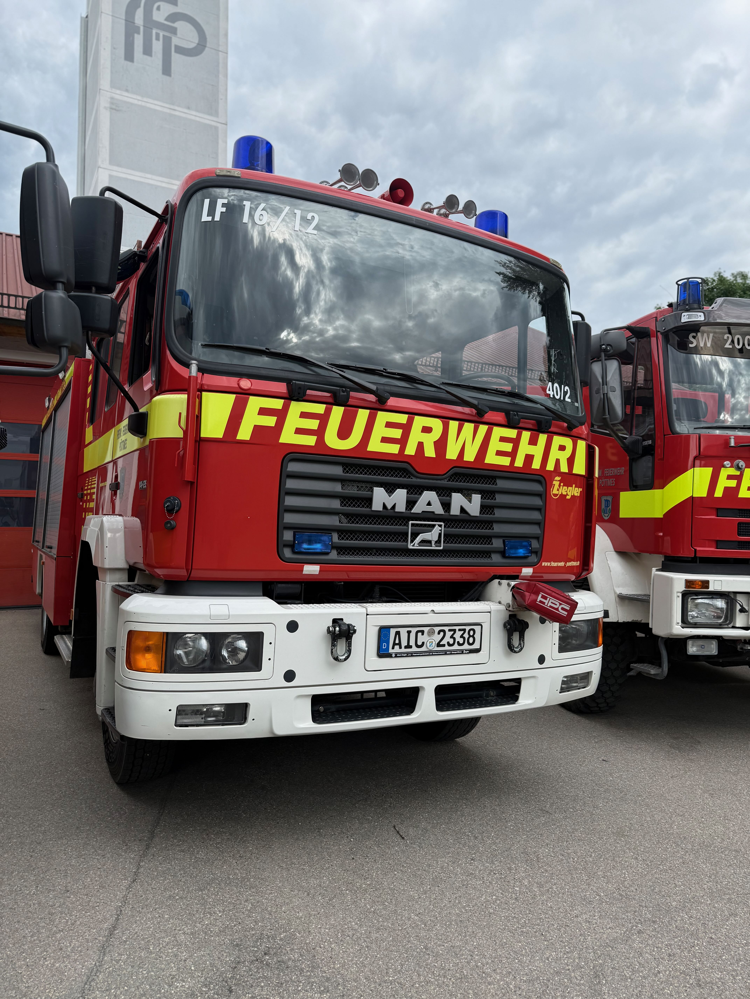
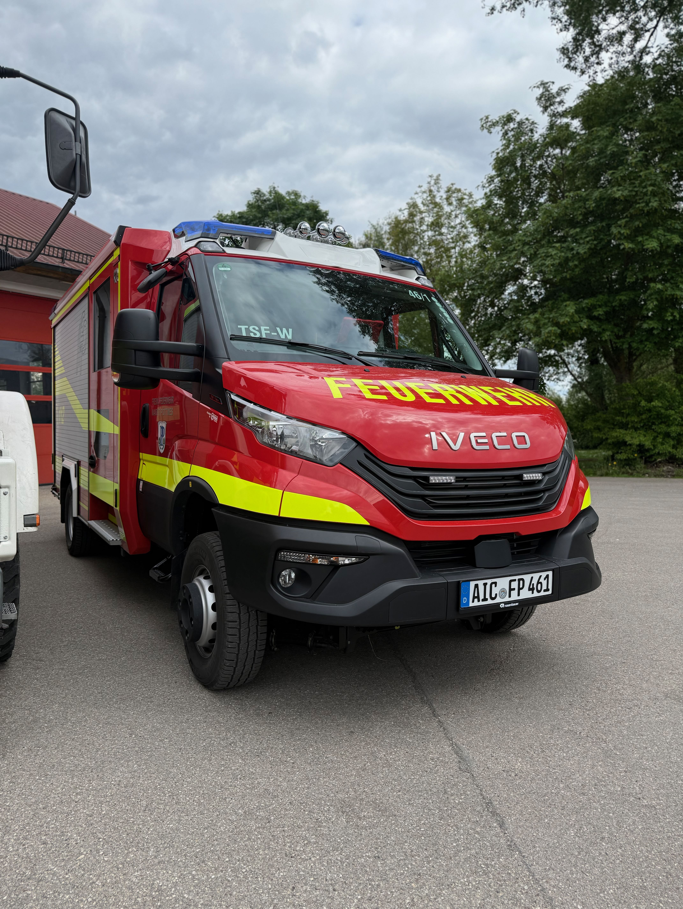
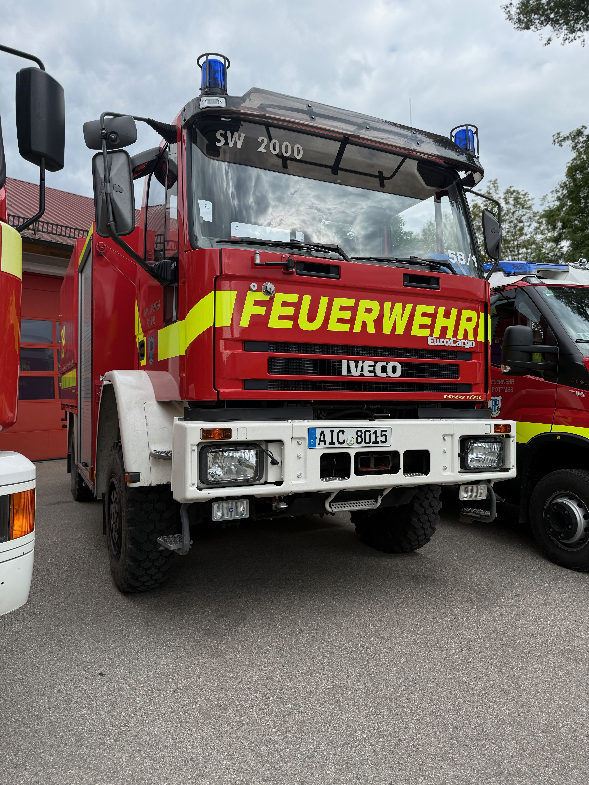

150 Jahre Feuerwehr
Im Jubiläumsjahr feiern wir Tradition, Gemeinschaft und gelebten Einsatzdienst.
Zur Jubiläumsseite
Im Jubiläumsjahr feiern wir Tradition, Gemeinschaft und gelebten Einsatzdienst.
Zur Jubiläumsseite
Die Jugendfeuerwehr Pöttmes - eine starke Gemeinschaft!
Hier findest du wann wir uns wieder treffenHerzlich willkommen auf der offiziellen Webseite der Freiwilligen Feuerwehr Pöttmes.
Seit stolzen 150 Jahren sind wir eine tragende Säule der Sicherheit in der Marktgemeinde Pöttmes. Mit rund 50 aktiven Mitgliedern und vielen unterstützenden Vereinsmitgliedern stehen wir unserer Gemeinde zuverlässig zur Seite.
Unsere Aufgabe ist klar: Im Auftrag der Marktgemeinde sorgen wir rund um die Uhr für die Sicherheit in Pöttmes und seinen Ortsteilen - mit Erfahrung, Teamgeist und moderner Ausrüstung.
Auf unserer Webseite finden Sie Einblicke in unsere Arbeit, aktuelle Einsätze und Möglichkeiten, Teil unserer Gemeinschaft zu werden.
Du bist mindestens 12 Jahre alt und möchtest dich engagieren?
Die Jugendübung findet jeden zweiten Samstag um 13:00 Uhr am Feuerwehrhaus statt.



Unser Mehrzweckfahrzeug für Führung, Erstversorgung und flexible Unterstützung im Einsatz.

Unser Hilfeleistungslöschfahrzeug für Brandbekämpfung, Rettung und technische Hilfeleistungen.

Unser bewährtes Löschgruppenfahrzeug für eine zuverlässige und starke Einsatzunterstützung.

Unser TSF-W für schnellen Erstangriff und sichere Löschwasserversorgung, auch in anspruchsvollem Gelände.

Unser Schlauchwagen für lange Wasserförderstrecken und den überörtlichen Katastrophenschutz.